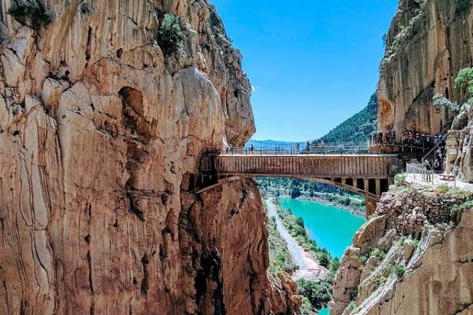
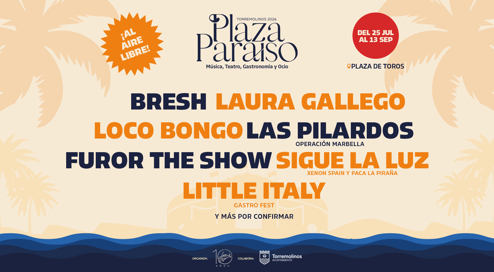

Summer guide · Costa del Sol
Things to Do in Torremolinos & the Costa del Sol
Beaches, open-air concerts, the freshest espetos on the coast and the liveliest summer festival in Andalucía. Your insider guide to Torremolinos 2026.
Latest articles
Featured


The Best Things to Do in Torremolinos This Summer
Open-air concerts at a historic bullring, seven kilometres of Blue Flag beaches, fresh espetos by the sea, Spain's oldest LGBTQ+ neighbourhood and easy day trips to Málaga, Mijas and Marbella — everything you need to plan the perfect Torremolinos summer.
Read article
Beaches

The 6 Best Beaches in Torremolinos: Complete Guide
El Bajondillo for the social scene, La Carihuela for families, Los Álamos for water sports — which of Torremolinos' six Blue Flag beaches is right for you?
Read article
Day Trips

5 Best Day Trips from Torremolinos (2026 Guide)
Caminito del Rey, Nerja, Mijas, Ronda and Granada: five very different excursions, each with its own character. Here is how to choose yours.
Read article
Itinerary
One Perfect Day in Torremolinos: Hour by Hour
Beach, espetos, a beach club afternoon and an open-air festival at the bullring — how to fit everything into a single unforgettable day on the Costa del Sol.
Read article
Málaga


Best Things to Do in Málaga This Summer
Beaches, open-air festivals, Picasso, espetos and free Andalusian culture: the complete guide to the Costa del Sol in summer 2026.
Read article
Nightlife
Loco Bongo at Plaza Paraíso Torremolinos: All 2026 Dates
Spain’s most fun afternoon party — game show, DJ, tombola and outrageous challenges — at the Torremolinos bullring. 9 dates from July to September, tickets from €16.
Read article
Nightlife

Torremolinos Nightlife: The Complete Guide
Beach clubs on the seafront, La Nogalera's iconic LGBTQ+ bars, the Pueblo Blanco tapas crawl and the brand-new open-air shows at the bullring — where to go out in Torremolinos this summer.
Read article
Guide

Things to Do in Torremolinos in July 2026: Events, Beaches & Plaza Paraíso
Feria del Carmen procession, beaches at their peak, chiringuitos at sunset and Plaza Paraíso opening on 25 July. The essential plans for July on the Costa del Sol.
Read article
25 Jul – 13 Sep 2026
The Costa del Sol's summer festival
Concerts, shows, a gastrofest and DJ sets — all inside the historic Torremolinos bullring, open to the sky every Thursday to Sunday from late July to mid September.